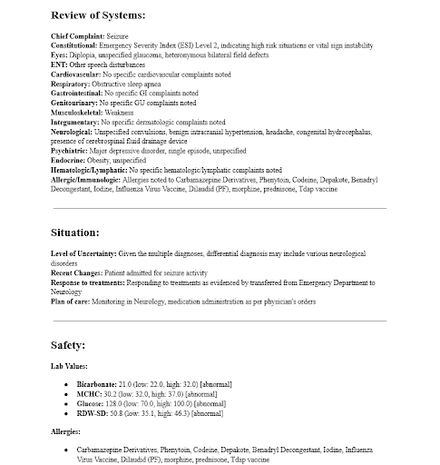

Nurses spend 30-40% of their working hours on indirect care tasks, such as documenting in the Electronic Medical Record (EMR), information exchange, and patient handoffs. This significant allocation of time reduces their availability for direct care activities like medication administration, providing emotional support, and patient education. To mitigate this issue, there is a promising opportunity to utilize Artificial Intelligence (AI), specifically Large Language Models (LLMs), to create a report that aggregates EMR information, thereby enhancing clinical decision support for nurses.
This study focuses on evaluating how effectively generative AI can synthesize EMR data into patient reports that facilitate nurses in their clinical decision-making processes. In addition to developing the AI-generated patient report template, we aim to gather feedback from practicing nurses regarding its efficacy and their overall attitudes toward the integration of AI in their daily workflows.
By harnessing the power of LLMs to analyze vast quantities of medical data, this initiative seeks to enable nurses to dedicate more time to direct patient care while minimizing the time spent interacting with the EMR. This research represents a significant step towards improving nursing efficiency and enhancing patient care outcomes through the intelligent application of AI technologies.
AI-generated patient report template for clinical decision support in nursing.

Additional image related to clinical decision support for nursing.